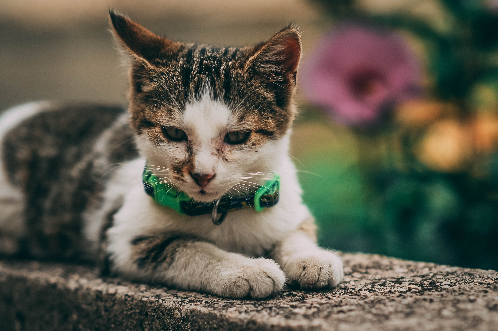

When it comes to pictures of ourselves there's no argument to be had. Professionally done headshots and portraits are far better looking and better quality than anything you can do yourself. Whether it's for a job, for your family or just to have amazing photos to have on your social profile pictures, your choice should be a professional.

Portraits
Macro/nature photography
There's nothing more gorgeous than nature itself. And while we may enjoy sunsets and flowers from time to time, it's hard finding the photos that bring the same emotions as real life does. With professional stock macro/nature photos you get as close to real life in quality and emotion.

Pet portraits
Your pets are wonderful and majestic creatures. Organize a photoshoot for your pets so you can have great quality and beautiful pictures to post on social media or to keep for yourself.